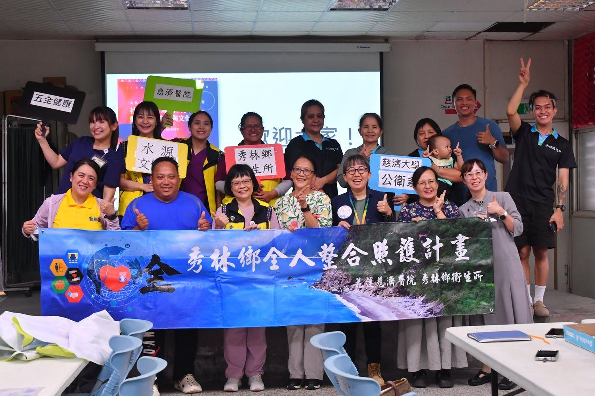

花蓮水源部落創社會處方箋 融入文化打造健康模式

可樂電子報小編/編輯
花蓮慈濟醫院將健康照護延伸至部落，首創的社區處方箋計畫在秀林鄉水源文化健康站正式啟動。這項創新模式旨在透過熟悉部落文化的照顧服務員擔任「連結者」，引導居民重新連結土地與文化，將其轉化為促進健康的內在力量。此方案於7月31日正式展開，預計逐步發展出專屬於部落的健康樣貌，亦是社會處方箋在東部落地的重大里程碑。

此計畫為東區全人醫療照護計畫的創新一環，將醫療場域擴展至生活情境，並率先引入社會處方箋概念。花蓮慈濟醫院攜手秀林鄉衛生所及慈濟大學公共衛生學系，共同推動「山林文化與健康行為社會處方箋計畫」，以「健康肝」為核心議題，培訓在地文化健康站照服員成為未來八週深度方案的引導者，期待藉由其對社區的熟悉度，結合原住民族文化與在地資源，打造具特色的社會處方箋。

慈濟大學公共衛生學系高靜懿老師，以原住民文化中「Btunux」、「alang」與「kndsan」為概念，為水源社區設計獨特的藝術與文化社會處方箋。課程融合藝術創作、文化探索與健康促進，旨在引導居民與土地、部落及生活重建連結，讓文化成為健康促進的重要動力。策辦團隊特別感謝115年東區醫院總額風險移撥款及水源文化健康站、花蓮縣秀林鄉水源社區發展協會理事長的大力支持，促成此次跨域合作。

計畫顧問周妮萱老師強調，社會處方的核心精神在於關注個人真正重視的需求，連結者如同馬拉松的配速員，陪伴、觀察並引導，協助居民找到最適合自己的健康節奏。透過傾聽個案對生活品質、心理需求或社會連結的渴望，連結者將成為串聯醫療與社區的橋樑，共同找尋最適合的支持方式。培訓課程自六月展開，不僅培養出許多能串聯居民、社區與醫療的健康夥伴，也吸引來自非洲的慈濟大學國際學生參與，交流多元文化下的健康支持模式。